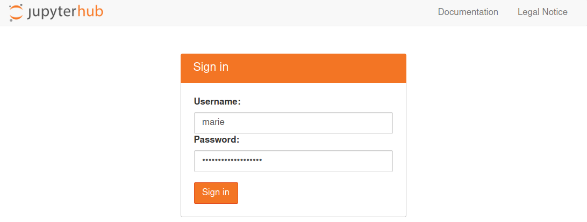
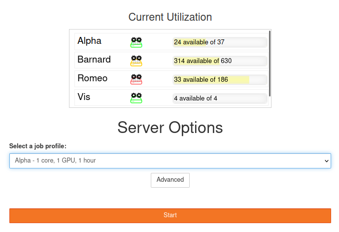
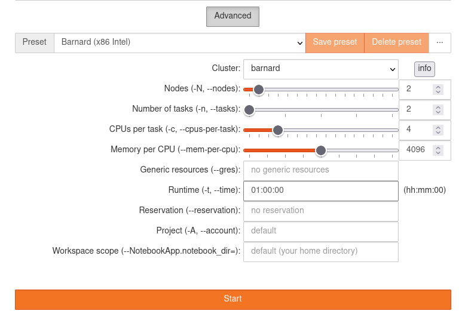
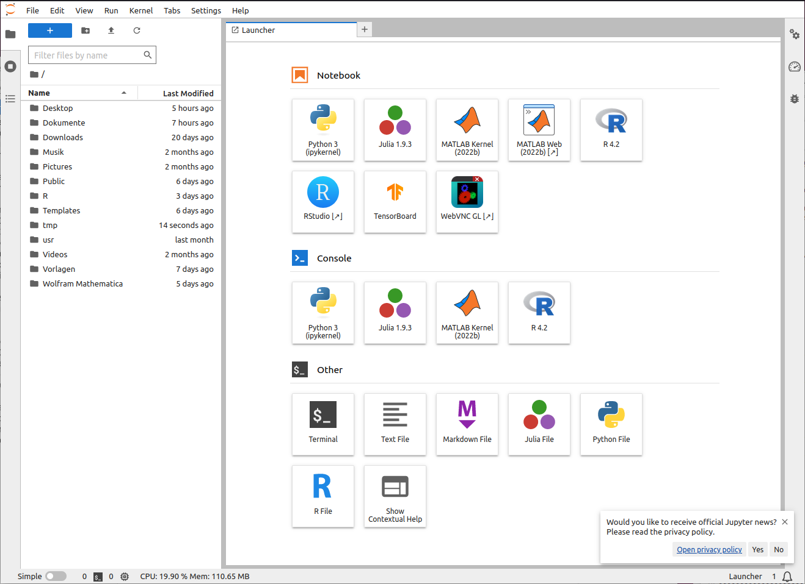
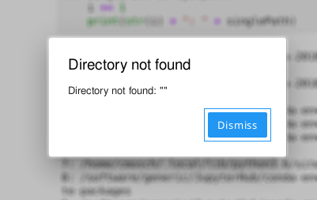

JupyterHub#
With our JupyterHub service, we offer you a quick and easy way to work with Jupyter notebooks on ZIH systems. This page covers starting and stopping JupyterHub sessions, error handling and customizing the environment.
We also provide a comprehensive documentation on how to use JupyterHub for Teaching (git-pull feature, quickstart links, direct links to notebook files).
Disclaimer#
!!! warning
The JupyterHub service is provided *as-is*, use at your own discretion.
Please understand that JupyterHub is a complex software system of which we are not the developers and don’t have any downstream support contracts for, so we merely offer an installation of it but cannot give extensive support in every case.
Access#
!!! note
This service is only available for users with an active HPC project.
See [Application for Login and Resources](../application/overview.md), if
you need to apply for an HPC project.
JupyterHub is available at https://jupyterhub.hpc.tu-dresden.de.
Login Page#
At login page please use your ZIH credentials (without @tu-dresden.de).

{: align=”center”}Start a Session#
Start a new session by clicking on the Start button.
Standard Profiles#
Our simple form offers you the most important settings to start quickly.

{: align=”center”}We have created three profiles for each cluster, namely:
Cluster |
Resources |
Optimized for |
|---|---|---|
Alpha-interactive |
1 cores, 10 GB, 2 hours |
x86_64 (AMD) |
Capella-interactive |
1 cores, 14 GB, 2 hours |
x86_64 (AMD) |
Barnard |
4 cores, 9,5 GB, 2 hours |
x86_64 (Intel) |
Romeo |
4 cores, 8 GB, 2 hours |
x86_64 (AMD) |
VIS |
4 cores, 9.5 GB, 2 hours |
Visualization |
Julia |
1 core, 54 GB, 2 hours |
x86_64 |
Alpha |
6 cores, 60 GB, 1 GPU, 2 hours |
x86_64 (AMD) |
Capella |
14 cores, 188 GB, 1 GPU, 2 hours |
x86_64 (AMD) |
Advanced Options#
Aside of the standard profiles there is the possibility to specify custom parameters to the job
spawner. This can be activated cby licking at the Advanced button located below to the profile
list.

{: align=”center”}JupyterLab#
After your session it is spawned you will be redirected to JupyterLab. The main interface looks like as following:

{: align=”center”}!!! note
Your interface may differ from the picture above as not all icons (launchers) are available
at all profiles.
The main workspace is used for multiple notebooks, consoles or terminals. Those documents are organized with tabs and a very versatile split screen feature. On the left side of the screen you can open several views:
file manager
controller for running kernels and terminals
overview of commands and settings
details about selected notebook cell
list of open tabs
At the following table it’s possible to see what is available at each cluster.
Cluster |
Julia |
R |
RStudio |
MATLAB |
MATLAB Web |
WebVNC |
DCV |
|---|---|---|---|---|---|---|---|
Alpha |
- |
OK |
OK |
OK |
OK* |
OK* |
- |
Barnard |
OK |
OK |
OK |
OK |
OK* |
OK* |
- |
Capella |
OK |
OK |
OK |
OK |
- |
- |
- |
Romeo |
- |
OK |
OK |
OK |
OK* |
OK* |
- |
VIS |
OK |
OK |
OK |
OK |
OK* |
OK* |
OK |
!!! note “*Note”
All small profiles for all clusters do not include MATLAB Web neither WebVNC.
Jupyter Notebooks in General#
In JupyterHub, you can create scripts in notebooks. Notebooks are programs which are split into multiple logical code blocks. Each block can be executed individually. In between those code blocks, you can insert text blocks for documentation. Each notebook is paired with a kernel running the code.
We offer some custom kernel for Julia*, MATLAB and R.
!!! note
Some kernels may not be available depending of the amounting of resources requested for the
job or due to the availability of modules to an specific cluster.
Version Control of Jupyter Notebooks with Git#
Since Jupyter notebooks are files containing multiple blocks for input code,
documentation, output and further information, it is difficult to use them with
Git. Version tracking of the .ipynb notebook files can be improved with the
Jupytext plugin. Jupytext will
provide Markdown (.md) and Python (.py) conversions of notebooks on the fly,
next to .ipynb. Tracking these files will then provide a cleaner Git history.
A further advantage is that Python notebook versions can be imported, allowing
to split larger notebooks into smaller ones, based on chained imports.
!!! note
The Jupytext plugin is not installed on the ZIH systems at the moment.
Currently, it can be [installed](https://jupytext.readthedocs.io/en/latest/install.html)
by the users with parameter `--user`.
Therefore, `ipynb` files need to be made available in a repository for shared
usage within the ZIH system.
Stop a Session#
It is good practice to stop your session once your work is done. This releases resources for other users and your quota is less charged. If you just log out or close the window, your server continues running and will not stop until the Slurm job runtime hits the limit (usually 8 hours).
At first, you have to open the JupyterHub control panel.
=== “JupyterLab”
Open the file menu and then click on `Logout`. You can
also click on `Hub Control Panel`, which opens the control panel in a new tab instead.

{: align="center"}
Error Handling#
We want to explain some errors that you might face sooner or later. If you need help, open a ticket and ask for support as described in How to Ask for Support.
Error Message in JupyterLab#

{: align=”center”}If the connection to your notebook server unexpectedly breaks, you will get this
error message. Sometimes your notebook server might hit a batch system or
hardware limit and gets killed. Then, the log file of the corresponding
batch job usually contains useful information. These log files are located in your
home directory and have the name jupyterhub-<clustername>.log.
Advanced Tips#
Loading Modules#
Inside your terminal session you can load modules from the module system.
Custom Kernels#
As you might have noticed, after launching JupyterLab,
there are several boxes with icons therein visible in the Launcher.
Each box therein represents a so called ‘Kernel’.
(note that these are not to be confused with operating system kernel,
but similarly provide basic functionality for running your use cases,
e.g. Python or R)
You can also create your own Kernels.